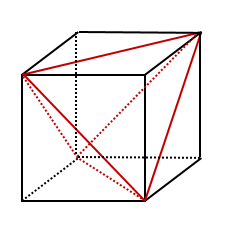

<html></html>
<head>
<meta charset="UTF-8">
<link rel="stylesheet" href="index.css">
</head>
<title>平成30年度青森県教員採用試験別解について</title>
<!-- Global site tag (gtag.js) - Google Analytics -->
<script async src="https://www.googletagmanager.com/gtag/js?id=UA-135083881-1"></script>
<script>
  window.dataLayer = window.dataLayer || [];
  function gtag(){dataLayer.push(arguments);}
  gtag('js', new Date());

  gtag('config', 'UA-135083881-1');
</script>

<script type="text/javascript" async
  src="https://cdnjs.cloudflare.com/ajax/libs/mathjax/2.7.1/MathJax.js?config=TeX-AMS_CHTML">
</script>
<style type="text/css">
div2{
  position:relative;
  text-align: center;
  top:  100px;
  font-size:x-large;
}
<div id="menu">
<ul>
<li><a href="#">ホームページ</a></li>
<li><a href="#">リスト</a></li>
<li><a href="#">日記</a></li>
<li><a href="#">掲示板</a></li>
</ul>
</div>
</style>

<body>
<h1><center>平成30年度青森県教員採用試験解答解説</center></h1>
<style>
h1{
color: #364e96;/*文字色*/
padding: 0.5em 0;/*上下の余白*/
border-top: solid 3px #364e96;/*上線*/
border-bottom: solid 3px #364e96;/*下線*/
}</style>
<div class="nav">
<ul class="nl clearFix">
<li><a href="index.html">大問1</a></li>
<li><a href="index2.html">大問2</a></li>
<li><a href="index3.html">大問3</a></li>
<li class="active"><a href="index4.html">大問4</a></li>
<li><a href="index5.html">大問5</a></li>
<li><a href="index6.html">大問6</a></li>
</ul>
</div>
<h2>４.図のような\(1\)辺の長さが\(a\)の正四面体\(ABCD\)の体積を\(V\),表面積を\(S\)とする。
  次の(1)〜(3)に答えなさい。</h2><br>
<center>
<br>
</center>
<br>
(1)体積\(V\)を求めなさい。<br>
<br>
解.
<center>


</center>
<center>
頂点\(A\)から\(△BCD\)に垂線\(AH\)を下ろすと点\(H\)は\(△BCD\)の重心と一致する。<br>
<font color="000000">
  <div style="padding: 10px; margin-bottom: 10px; border: 5px double #333333;">
    <div style="border: 1px solid #000; padding: 10px;">  <b>  「三角形の重心の特徴」</b></div>
    <br>
    三角形の頂点と，その対辺の中点を結ぶ\(3\)つの線は\(1\)点で交わり,
    その点は<b>各中点を\(2:1\)に内分する。</b>
    頂点とその対辺の中点を結ぶことを中線といい,
    この点のことを<b>三角形の重心</b>という。
<br>
</div>
<font color="black">
\(△BCD\)より<br>
\begin{align*}
CM&=DM=\frac{1}{2}\\
BM&=\frac{\sqrt{3}}{2}a （三平方の定理)\\
\end{align*}
<font color="#ff0000">
<b>※　三平方の定理<br>
\(30°,60°,90°\)の直角三角形になるので<br>
\(1:2:\sqrt{3}\)<br>
</b>
</font>
\begin{align*}
BH:BM&=2:1 （三角形の重心の定理）\\
\end{align*}
<font color="#ff0000">
  <b>※　三角形の重心の定理<br>
三角形の３つの中線は\(1\)点で交わり、その交点は中線を　\(2:1\)の比に分ける。<br>
</b>
</font>
\begin{align*}
BH&=BM×\frac{2}{3}\tag{1}\\
&=\frac{\sqrt{3}}{2}a×\frac{2}{3}\tag{2}\\
&=\frac{\sqrt{3}}{3}a\tag{3}\\
\end{align*}
よって高さ\(AH\)は\(△ABH\)について三平方の定理より<br>
<font color="#ff0000">
<b>※　三平方の定理<br>
\(c^2=a^2+b^2\)<br>
</b>
</font>
\begin{align*}
AH^2&=a^2-
\left(
\frac{\sqrt{3}}{3}a^2
\right)
^2\tag{4}\\
&=a^2-\frac{1}{3}a^2\tag{5}\\
&=\frac{2}{3}a^2\tag{6}\\
AH&=\frac{\sqrt{6}}{3}a\tag{7}\\
\end{align*}
正四面体の体積=底面積×高さ×\(\large\frac{1}{3}\)<br>
\begin{align*}
V&=
\left(
a×\frac{\sqrt{3}}{2}a×\frac{1}{2}
\right)
×\frac{\sqrt{6}}{3}a×\frac{1}{3}\tag{8}\\
&=\frac{\sqrt{2}}{12}a^3\tag{9}
\end{align*}
\begin{align*}
 \underline{\large∴V=\frac{\sqrt{2}}{12}a^3} \\
 \end{align*}
</center>

<br>
別解.
<center>
<br>
1辺がaの正四面体の体積は１辺が\(\frac{\sqrt{a}}{2}\)である立方体から「縦,横,高さが全て\(\large\frac{\sqrt{a}}{2}\)である直角三角錐」を4つ引いたものなので<br>
\begin{align*}
V&=
\left(
\frac{a}{\sqrt{2}}
\right)
^3-4×\frac{a}{\sqrt{2}}×\frac{a}
{\sqrt{2}}×\frac{1}{2}×\frac{a}{\sqrt{2}}×\frac{1}{3}\tag{10}\\
&=\frac{a^3}{2\sqrt{2}}-\frac{a^3}{3\sqrt{2}}\tag{11}\\
&=\frac{\sqrt{2}}{4}a^3-\frac{\sqrt{2}}{6}a^3\tag{12}\\
&=\frac{\sqrt{2}}{12}a^3\tag{13}\\
\end{align*}
\begin{align*}
 \underline{\large∴V=\frac{\sqrt{2}}{12}a^3} \\
 \end{align*}

</center>
<center>
また、体積が求められれば高さも求められる。正四面体の底面積は
\(a×\large\frac{\sqrt{3}}{2}a×\large\frac{1}{2}\)=\(\large\frac{\sqrt{3}}{4}a^2\)なので
\begin{align*}
\frac{\sqrt{2}}{12}a^3&=\frac{\sqrt{3}}{4}a^2×h×\frac{1}{3}\tag{14}\\
h&=\frac{\sqrt{2}}{12}a^3×\frac{4}{\sqrt{3}a^2}×3\tag{15}\\
&=\frac{\sqrt{2}}{\sqrt{3}}a\tag{16}\\
&=\frac{\sqrt{6}}{3}a\tag{17}\\
\end{align*}
\begin{align*}
 \underline{\large h=\frac{\sqrt{6}}{3}a}\\
 \end{align*}
</center>
<br>
<hr style="border:0;border-top:2px solid skyblue;">
(2)図の正四面体に内接する球の半径を\(r\)とするとき,
\(\large\frac{1}{3}rS\)が成り立つことを示しなさい。<br>
<br>
解.
<center>
正四面体\(ABCD\)に内接する円の中点を\(O\)とする。<br>
正四面体\(ABCD\)は点\(O\)を頂点として,\(△ABC,△ACD,△ABD,△BCD\)を底面とする
\(4\)つの合同な三角錐に分けられる。<br>
</center>
<center>
<br>
\(4\)つの三角錐の高さは全て\(r\)なので<br>
</center>
<center>
\begin{align*}
V&=(△ABC+△ACD+△ABD+△BCD)×r×\frac{1}{3}\\
&=\frac{1}{3}rS\\
\end{align*}
\begin{align*}
 \underline{\large∴V=\frac{1}{3}rS} \\
 \end{align*}
</center>
<br>
<hr style="border:0;border-top:2px solid skyblue;">
(3)図の正四面体に内接する球の半径\(r\)と体積\(V'\)を求めなさい。<br>
<br>
解.
\begin{align*}
S&=(△ABC+△ACD+△ABD+△BCD)\tag{18}\\
&=4×a×\frac{\sqrt{3}}{2}a×\frac{1}{2}\tag{19}\\
&=\sqrt{3}a^2\tag{20}\\
\end{align*}
<center>
(1),(2)より\(V=\large\frac{1}{3}rS\)だから<br>
</center>
\begin{align*}
\frac{\sqrt{2}}{12}a^3&=\frac{1}{3}r×\sqrt{3}a^2\tag{21}\\
\frac{1}{3}r&=\frac{1}{\sqrt{3}a^2}×\frac{\sqrt{2}}{12}a^3\tag{22}\\
r&=\frac{\sqrt{6}}{12}a\tag{23}\\
\end{align*}
\begin{align*}
 \underline{\large∴r=\frac{\sqrt{6}}{12}a} \\
 \end{align*}
 \begin{align*}
V'&=\frac{4}{3}{\pi}r^3\tag{24}\\
&=\frac{4}{3}{\pi}×
\left(
\frac{\sqrt{6}}{12}a
\right)
^3\tag{25}\\
&=\frac{4}{3}{\pi}×\frac{6\sqrt{6}}{1728}a^3\tag{26}\\
&=\frac{4}{3}{\pi}×\frac{\sqrt{6}}{288}a^3\tag{27}\\
&=\frac{\sqrt{6}}{216}{\pi}a^3\tag{28}\\
\end{align*}
\begin{align*}
 \underline{\large∴V'=\frac{\sqrt{6}}{216}{\pi}a^3} \\
 \end{align*}
</body>
<p></p>
<br>
